User Guide for SAP HANA#
Introduction#
Aurreum Data Protection Suite (ADPS) provides the capability for the backup and restore of SAP HANA databases. This guide introduces how to install the ADPS agent as well as how to properly use ADPS to back up and restore SAP HANA databases.
Features#
Feature |
Description |
|---|---|
Backup type |
On Demand: When the transaction logs are full or the time reaches the log backup setting, On Demand will be performed automatically. |
Backup source |
Database |
Backup target |
Standard storage pool, de-duplication storage pool, local storage pool, tape library pool, object storage service pool |
Reconnection time |
The job continues after the abnormal reset occurs in the network within the set time. The default value is 10 minutes. |
Stop jobs |
It is supported to stop backup and restore jobs. |
Compression |
None, fast, tunable |
Backup schedule |
Immediate, one-time, hourly, daily, weekly, monthly |
Restore type |
Timepoint restore: Restore the database to a specified point-in-time state. |
Restore target |
Overwrite the original database |
Restore granularity |
Database (single) |
Restore to a different host |
Data can be restored to a different host with the same version or from an old version to a new one. |
Storage pool replication |
SAP HANA backup sets support storage pool replication. |
Restore from target pool |
Data can be restored from target storage pools. |
Pre/Post action |
The pre action is executed after the job starts and before the resource is backed up or restored. The post action is executed after the resource is backed up or restored. |
Speed limit |
The data transport speed or disk read/write speed can be limited in different time periods. |
D2C |
Data can be backed up directly to the object storage. |
D2T |
Data can be backed up directly to the tape library. |
Modify a job’s backup source and target |
The settings of a backup job, including backup source and backup target, can be modified. |
Install and Configure Agent#
Verify Compatibility#
ADPS supports the backup and restore for SAP HANA single nodes and clusters. Before you install the agent, check whether your environment is supported. For details, see the following compatibility list.
Database Version |
Database Bits |
Operating System |
CPU Architecture |
OS Bits |
Note |
|---|---|---|---|---|---|
1.00.112.00 |
64 |
CentOS 6.7 |
x86 |
64 |
High availability |
1.00.112.03 |
64 |
CentOS 6.7 |
x86 |
64 |
Single-tenant |
1.00.112.03 |
64 |
CentOS 6.7 |
x86 |
64 |
Multi-tenant |
1.00.112.03 |
64 |
CentOS 6.7 |
x86 |
64 |
Two-node cluster |
1.00.112.21 |
64 |
SLES for SAP 12 SP3 |
x86 |
64 |
Multi-tenant |
1.00.122.00 |
64 |
SLES for SAP 12 SP2 |
x86 |
64 |
Multi-tenant |
2.00.000.00 |
64 |
SLES for SAP 12 SP2 |
x86 |
64 |
High availability |
2.00.000.00 |
64 |
SLES for SAP 12 SP2 |
x86 |
64 |
High availability |
2.00.030.00 |
64 |
SLES for SAP 12 SP2 |
x86 |
64 |
Multi-tenant |
2.00.030.00 |
64 |
SLES for SAP 12 SP2 |
x86 |
64 |
Two-node cluster |
2.00.045.00 |
64 |
SLES for SAP 15 |
x86 |
64 |
|
2.00.056.00 |
64 |
SLES for SAP 15 |
x86 |
64 |
High availability |
2.00.062.00 |
64 |
SLES for SAP 12 SP2 |
x86 |
64 |
Multi-tenant |
Download Agent Package#
Open a browser and log in to the ADPS console as the admin. Click Resource -> Install Agent icon. The Install agent window appears.
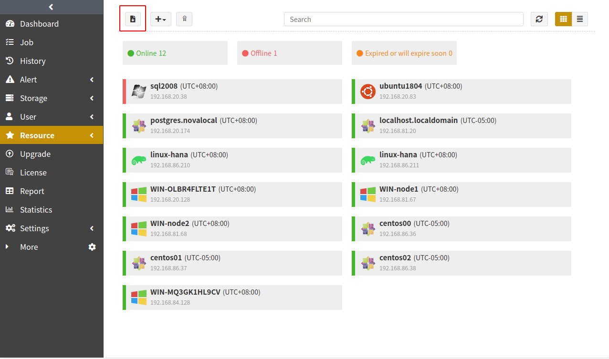
Install and Configure Agent on Linux#
In the Install agent window, select Linux as the system and SAP HANA as the module. Copy an installation command.
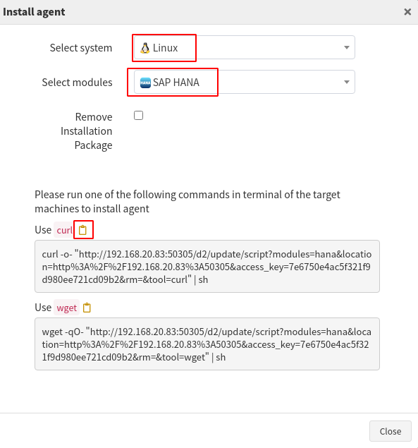
Paste the command in the terminal of the target host and press Enter to execute the installation.
linux-hana:~ # curl -o- "http://192.168.20.133:50305/d2/update/script?modules=hana&location=http%3A%2F%2F192.168.20.133%3A50305&access_key=3545f35aea7e512e12ab517230a46270&rm=&tool=curl" | sh % Total % Received % Xferd Average Speed Time Time Time Current Dload Upload Total Spent Left Speed 100 7906 0 7906 0 0 1207k 0 --:--:-- --:--:-- --:--:-- 1286k % Total % Received % Xferd Average Speed Time Time Time Current Dload Upload Total Spent Left Speed 0 0 0 0 0 0 0 0 --:--:-- --:--:-- --:--:-- 0 100 58.7M 100 58.7M 0 0 24.6M 0 0:00:02 0:00:02 --:--:-- 25.9M % Total % Received % Xferd Average Speed Time Time Time Current Dload Upload Total Spent Left Speed 0 0 0 0 0 0 0 0 --:--:-- --:--:-- --:--:-- 0 100 6730k 100 6730k 0 0 2483k 0 0:00:02 0:00:02 --:--:-- 2592k % Total % Received % Xferd Average Speed Time Time Time Current Dload Upload Total Spent Left Speed 0 0 0 0 0 0 0 0 --:--:-- --:--:-- --:--:-- 0 100 3626k 100 3626k 0 0 13.8M 0 --:--:-- --:--:-- --:--:-- 13.8M
Check Successful Installation#
After the successful installation, log in to the ADPS console as an admin. The target host with an agent installed is on the Resource list.
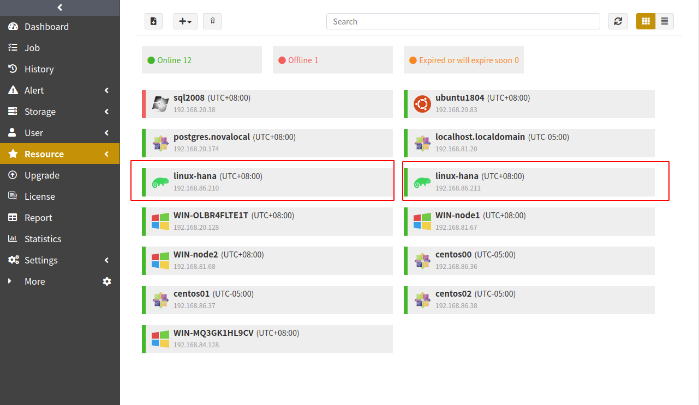
Before You Begin#
Verify Database Status#
Verify the SAP HANA service status on the host. The database should be in the “Running” status for the backup and restore.
hdbadm@linux-hana:/usr/sap/HDB/HDB00> sapcontrol -nr 00 -function GetProcessList
28.09.2022 03:42:32
GetProcessList
OK
name, description, dispstatus, textstatus, starttime, elapsedtime, pid
hdbdaemon, HDB Daemon, GREEN, Running, 2022 09 27 07:32:23, 20:10:09, 25898
hdbcompileserver, HDB Compileserver, GREEN, Running, 2022 09 27 07:33:24, 20:09:08, 26139
hdbnameserver, HDB Nameserver, GREEN, Running, 2022 09 28 02:30:19, 1:12:13, 2816
hdbpreprocessor, HDB Preprocessor, GREEN, Running, 2022 09 27 07:33:24, 20:09:08, 26142
hdbwebdispatcher, HDB Web Dispatcher, GREEN, Running, 2022 09 27 07:35:18, 20:07:14, 26494
hdbindexserver, HDB Indexserver-HDB, GREEN, Running, 2022 09 28 02:30:20, 1:12:12, 2819
hdbxsengine, HDB XSEngine-HDB, GREEN, Running, 2022 09 27 07:33:25, 20:09:07, 26192
Check Resource#
Log in to the ADPS console as an operator with SAP HANA permissions and open the Resource page. The activated resource is listed on the page with an “Online” state. If the resource is not available, see Activate License and Authorize User.
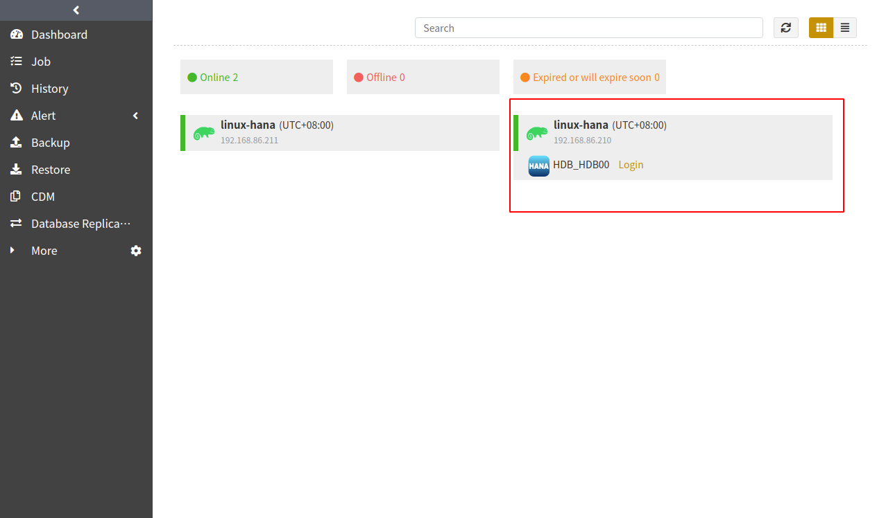
Check Storage Pool#
Log in to the ADPS console as an operator, go to the Storage Pool page, and check whether the operator has been assigned any storage pools. If no storage pool is present, contact the admin to create one and assign it to the operator.
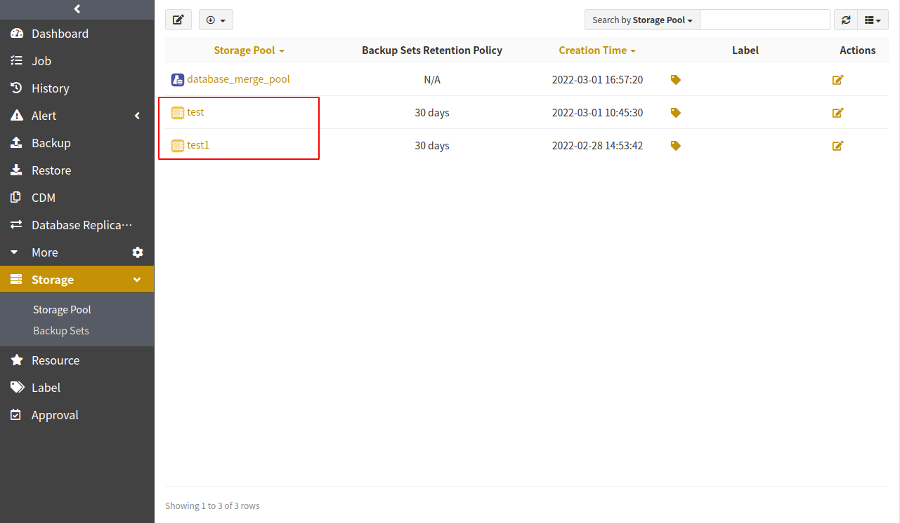
First Time Login#
Before you create the first backup and restore, SAP HANA login is required. On the Resource page, click Login next to SAP HANA.
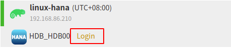
Note:
Enter the Access Key of the operator for the normal backup and restore functions.
After restoring SYSTEMDB to a different host, re-import the license into the database on the restore target.
Create Backup Jobs#
This chapter introduces how to back up SAP HANA databases.
Prerequisites#
An agent has been installed. For details, see Install and Configure Agent.
The license has been activated and users have been authorized to operate the resource. For details, see Activate License and Authorize User.
Open a browser and log in to the ADPS console as an operator.
Create On Demand Jobs#
When the transaction logs are full or the time reaches the log backup setting, the On Demand log backup job will be performed automatically.
Open the Backup page. At the Hosts and Resources step, select the host and SAP HANA instance.
At the Backup Source step, select On Demand as the backup type and choose databases as the backup source.
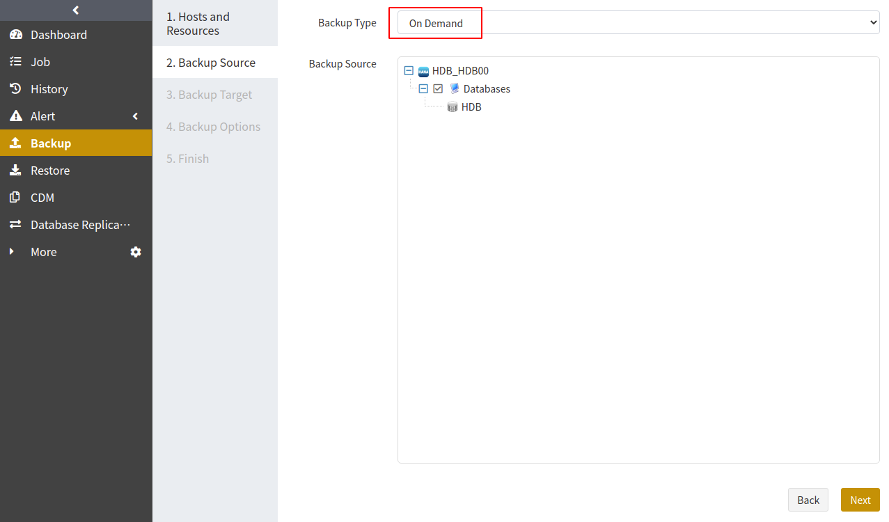
At the Backup Target step, select a storage pool. The target can be a standard storage pool, de-duplication storage pool, local storage pool, tape library pool, or object storage service pool.
At the Backup Options step, set the common and advanced options.
Common options:
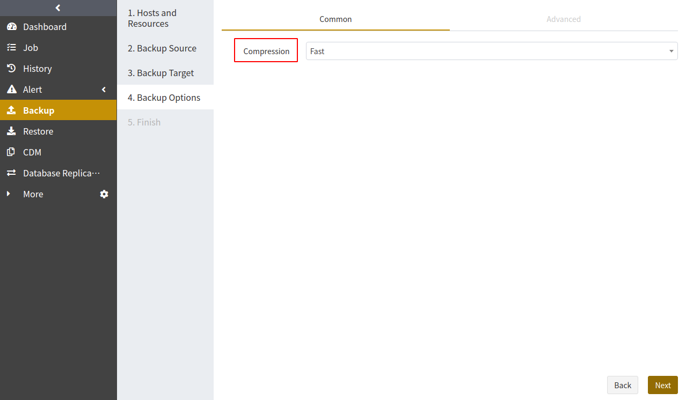
Compression: The Fast option is enabled by default.
None: During the backup, the data will not be compressed.
Tunable: You can customize the compression level. This option requires an activated feature of Advanced Compression.
Fast: During the backup, the data will be compressed by fast compression algorithms.
Advanced options:
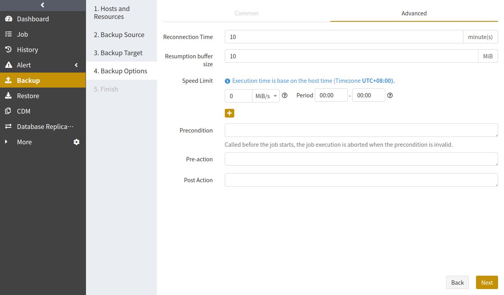
Reconnection time: This option supports 1 to 60 minutes. The job continues after the abnormal reset occurs in the network within the set time.
Speed limit: You can set speed limits for multiple time periods. The unit can be MiB/s or KiB/s.
Precondition: The precondition is checked before the job starts. The job execution is aborted when the precondition is invalid.
Pre/Post action: The pre action is executed after the job starts and before the resource is backed up or restored. The post action is executed after the resource is backed up or restored.
At the Finish step, set a job name and confirm the job information. Click Submit.
Create Full Backup Job#
You can create a full backup job to back up one or more databases.
Open the Backup page. At the Hosts and Resources step, select the host and SAP HANA instance.
At the Backup Source step, select Full as the backup type and choose databases as the backup source.
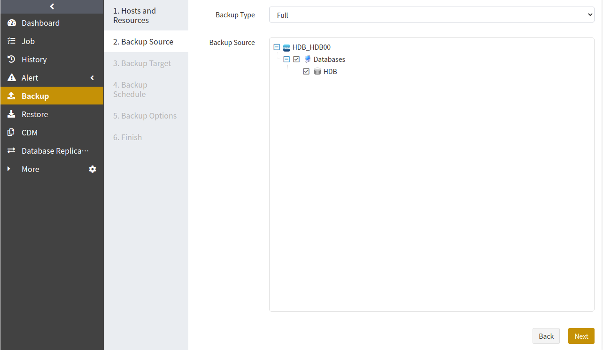
At the Backup Target step, select a storage pool. The target can be a standard storage pool, de-duplication storage pool, local storage pool, tape library pool, or object storage service pool.
At the Backup Schedule step, set the execution time for the job. For details, see Backup Schedule Operation.
At the Backup Options step, set the common and advanced options. For details, see the introduction in Create On Demand Jobs.
At the Finish step, set a job name and confirm the job information. Click Submit.
Create Incremental Backup Jobs#
Incremental backups only back up data that has changed since the last backup.
The procedure to create an incremental backup is the same as for a full backup. Select Incremental as the backup type and choose databases.
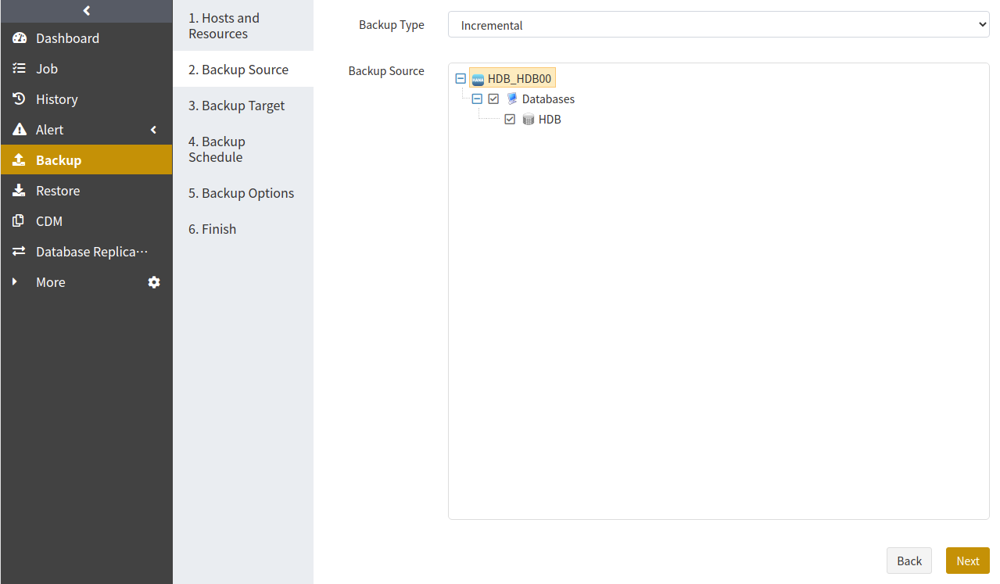
Create Cumulative Incremental Backup Jobs#
Cumulative incremental backups only back up data that has changed since the last full backup.
The procedure to create an incremental backup is the same as for a full backup. Select Cumulative Incremental Backup as the backup type and choose databases.
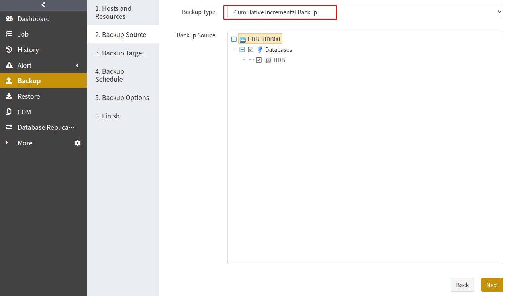
Create Restore Jobs#
This chapter introduces how to restore SAP HANA databases.
Prerequisites#
A backup job has been completed.
To restore to another host, install an agent on that host, activate the license, and authorize users to operate the resource.
Create Timepoint Restore Jobs#
When a disaster occurs in a SAP HANA database, Timepoint Restore can help you to restore the database to a specified point-in-time state.
Open the Restore page. At the Hosts and Resources step, select the host and SAP HANA instance. Click Next.
At the Backup Sets step, select a database that you want to restore and drag the slider control to specify a restore point in time. Click Next.
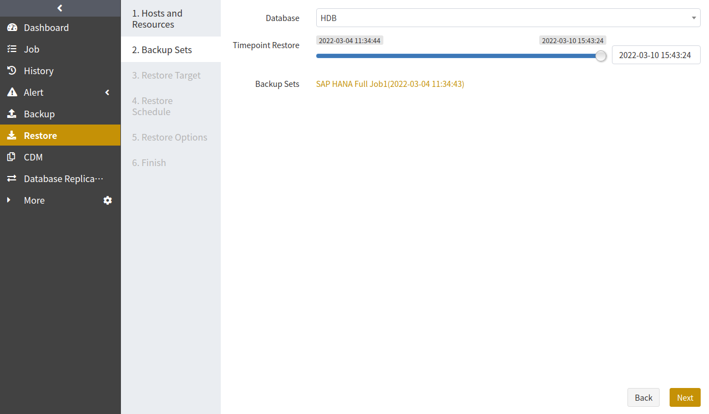
At the Restore Target step, select a resource as the restore target. The target can be the source or a different host. Click Next.
Note:
The restore target should have the same database mode as the restore source.
The target instance version should be newer than or equal to the source instance version.
At the Restore Schedule step, set the execution time for the job. Only immediate and one-time schedule types are supported. Click Next.
At the Restore Options step, set the options according to your needs, including reconnection time, speed limit, and pre/post action.
At the Finish step, set a job name and confirm the job information. Click Submit.
Manage Jobs#
The Job page provides the job information of all agents. You can start, modify, clone, and delete the jobs.
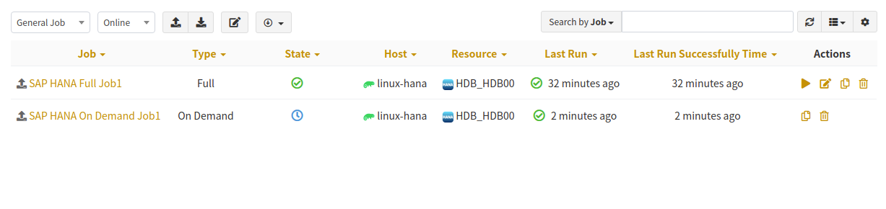
Start: Click
 to start the job immediately.
to start the job immediately.Modify: Click to modify the basic job information, backup/restore schedule, and backup/restore options.
Clone: Click to create multiple similar backup jobs.
Delete: Click to access the confirmation window. Click OK to delete the job.
Backup Protection Strategy#
Backup Schedule Operation#
ADPS provides six types of backup schedules. The schedule type selected is only valid for the currently created job.

Immediate: The job immediately starts to run after it is submitted.
One Time: After the job is created, it will be in an idle state and start to run when the specified Start time is reached.
Hourly: After the job is created, the first run will be initiated at the specified Start Time. The next run will be executed after a specified number of hours/minutes within the time range according to the setting. If you select Hour as the unit, you can set the value from 1 to 24. If you select Minute, you can set the value from 1 to 60.
Daily: After the job is created, the first run will be initiated at the specified Start Time. The next run will be executed after a specified number of days according to the setting. The value is an integer between 1 and 5.
Weekly: After the job is created, the first run will be initiated at the specified Start Time. The next run will be executed after a specified number of weeks according to the setting. You can specify which day of the week to run the job.
Monthly: The job runs on the specified days of some months at the specified time. For example, you can set the job to run on January 1 and June 1 at 20:00. Or you can set it to run on the first Monday of every month at 20:00.
Example: Run a job every two weeks on Friday at 18:00

The execution time will be:
If the current time is Friday at 17:00, the execution time will be Friday at 18:00 (the current day).
If the current time is Thursday at 17:00, the execution time will be Friday at 18:00 (the next day).
If the current time is Saturday at 17:00, the execution time will be next Friday at 18:00.
After the first run is completed, the job will start automatically at 18:00 on Friday every two weeks.
Backup Strategy Advice#
ADPS offers four SAP HANA backup types: On Demand, full backup, incremental backup, and cumulative incremental backup. It is recommended to formulate the following backup strategy according to different situations such as network bandwidth, business data volume, security requirements, and the amount of data loss that you can tolerate.
When the application traffic is relatively small, run a Full Backup once a week to ensure that you have at least one recoverable point in time every week.
After that, you can run a Cumulative Incremental Backup every day to reduce the backup time and ensure that you have at least one recoverable point in time every day.
Avoid using the following strategies:
Perform only full backups.
Perform one full backup followed by all incremental or cumulative incremental backups.
SAP HANA Cluster#
ADPS supports the backup and restore for SAP HANA clusters. Before you back up and restore a cluster, bind the SAP HANA nodes into a cluster. Deploy the environment of each node in the cluster according to Install and Configure Agent as well as Activate License and Authorize User.
Cluster Binding#
Go to Resource -> Cluster. Click the Cluster Binding icon.
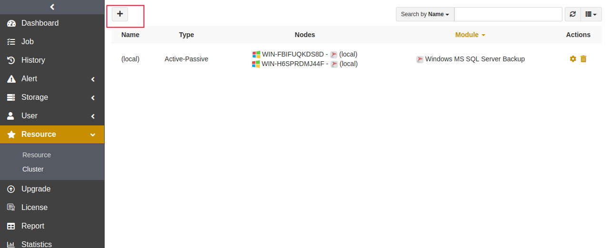
Customize the cluster name. Select the active node as the Primary Node, “Active-Passive” as the Type, and the inactive node as the Nodes. Click Submit.
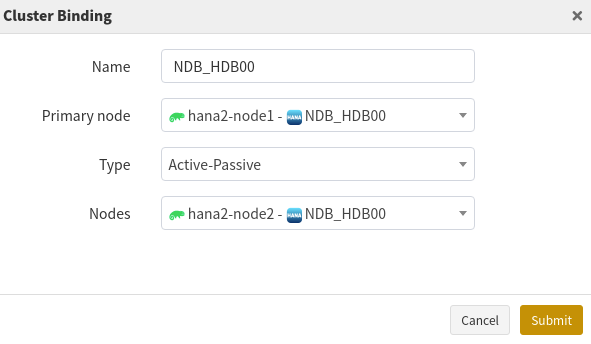
Backup and Restore#
SAP HANA cluster has the same backup and restore types as the single instance.
The Backup page displays only the active nodes in the SAP HANA cluster. Select an active node as the backup source. The remaining steps are similar to those in Create Backup Jobs.
When a switchover occurs in the nodes of the SAP HANA cluster, the new active node will automatically take over the backup job.
When creating a restore job, you can select a single instance or cluster as the restore target.
Limitations#
Function |
Limitations |
|---|---|
Backup |
On Demand log backup job is necessary. |